接到这个消息我真的Can't believe my ears.
还记得QQListener吗？我当时我抱着试一试的心态参加学校的比赛，结果学校给我选上了，然后我莫名其妙的和另外一个神秘人在株洲市内选上了。
据说市内就选了我们两个人，直接给我们送进省赛了（河西某高中都没有一个人）湖南省内也只有8个高中生。那那个神秘人是谁呢？其实是在本站出场率比站长本人还高的存在，有图为证：
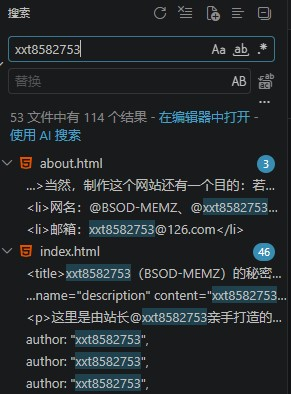
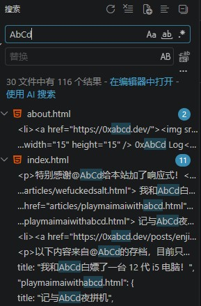
不过，总的来说，我周五周六不必再在学校坐牢，可以直接周四下午提前离校，去湘西（不知道为什么不是长沙）爽玩几天，还可以跟某个知名开源项目EasiAuto开发者住一间房，还是相当不错的。
启程
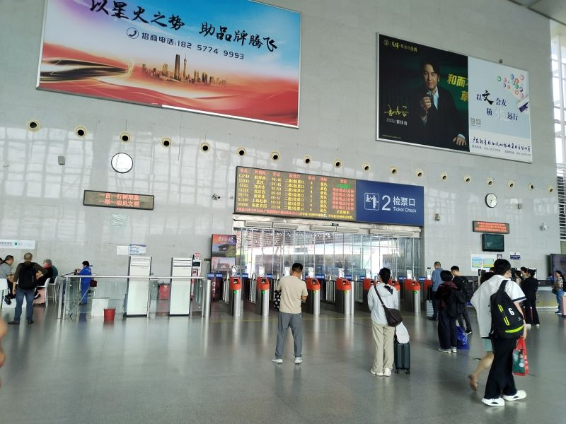
周五早上，我赶到车站。那种激动难以言表，这是我第一次独自（也不算独自，有两个老师看着）离开熟悉的城市，前往陌生的外地。
我拎着电脑包，提着行李箱，偌大的车站里小小的我紧跟着老师。绿色的“正在检票”标识亮起，我刷了身份证就飞速冲过闸机，生怕它夹住我。
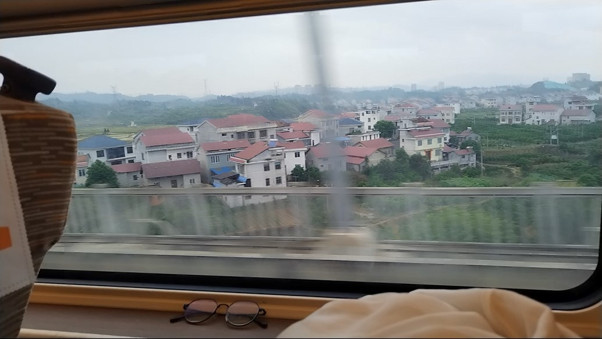
经过几小时的车程，我们到了吉首。
出了车站，一堆发传单的吆喝着：要不要去边城？我暗自窃笑：真正要去编程的在这里呢！
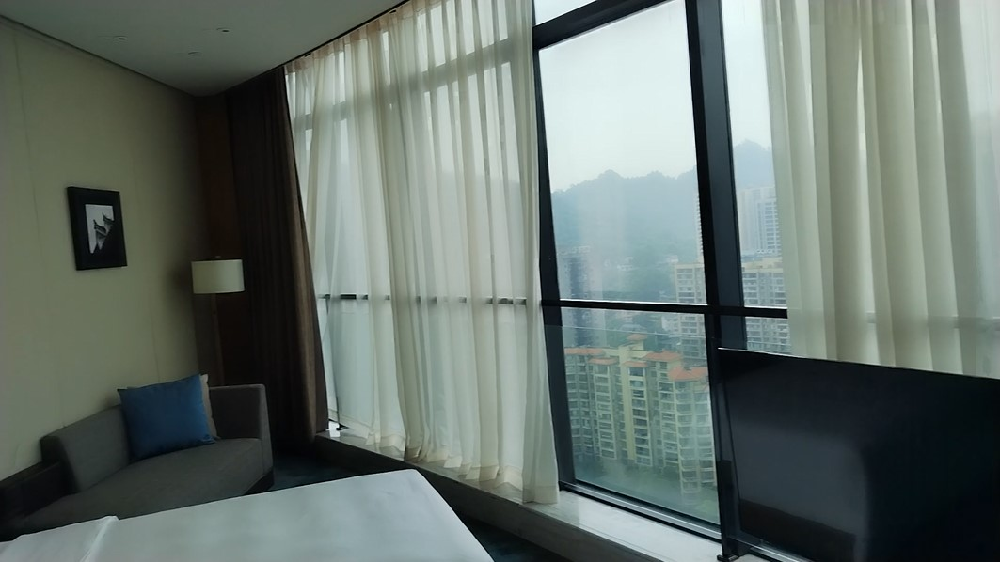
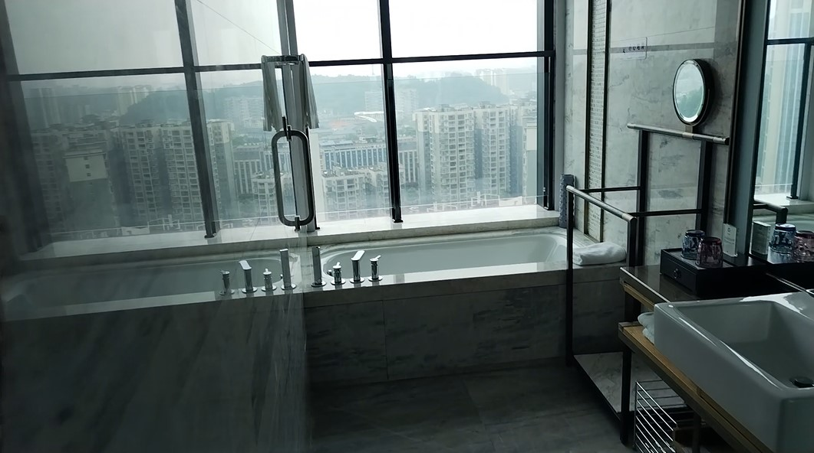
不得不说我们住的相当でらっくす，在酒店进行短暂的休息，前往溶江中学熟悉场地。
这不比我们学校高级？
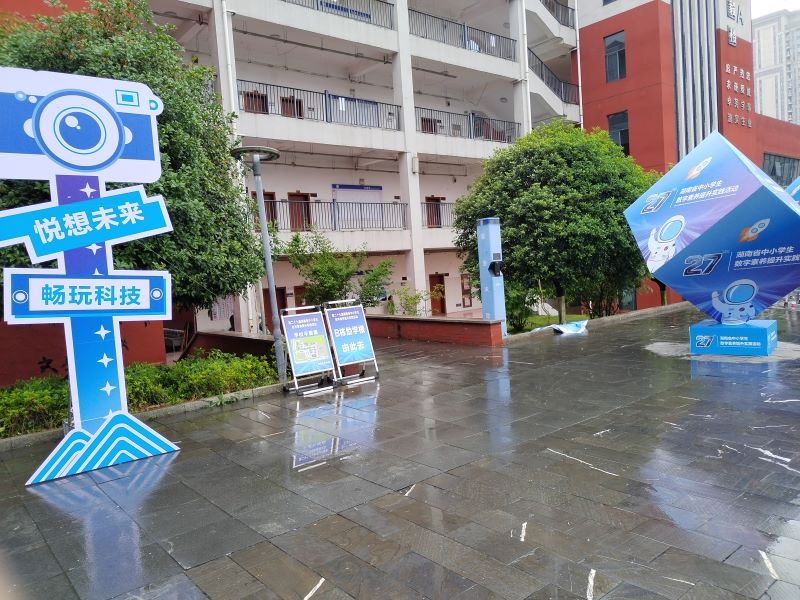
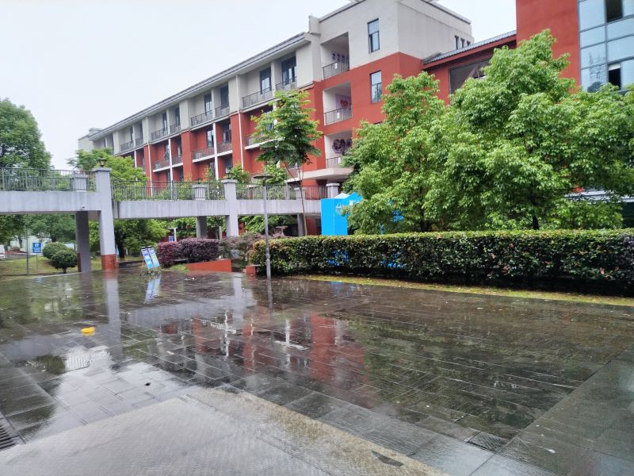
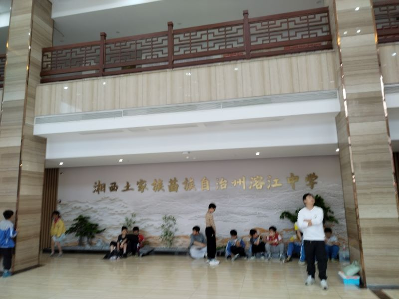
耶！ (≧∇≦)ﾉ
左：AbCd 右：xxt8582753，这里为了保护AbCd的隐私打了下码。
当然，这只是一些简单的体验，比赛什么的还在第二天。
我也在这一天学到许多新技能，例如如何用微信加群，如何用手机扫码点餐，如何点外卖，这些东西都是书本上学不到的。
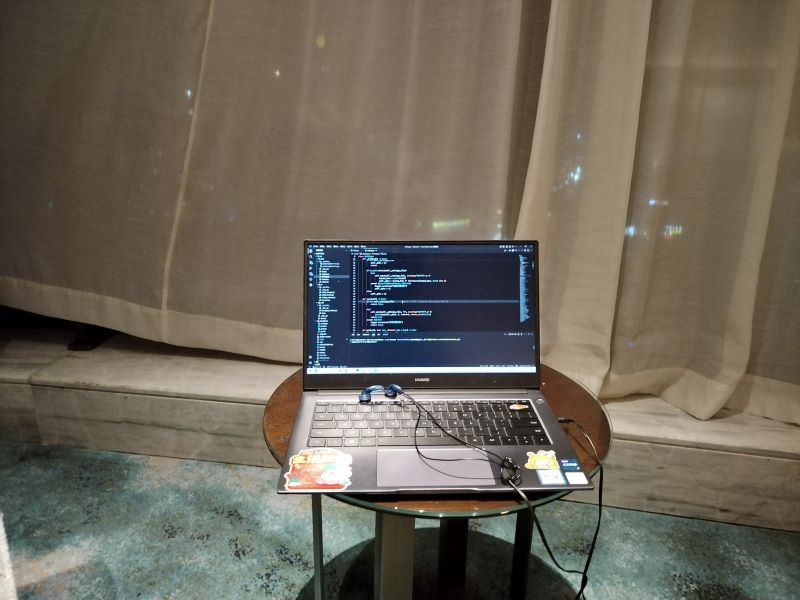
晚上，我仍在（Vibe）Coding
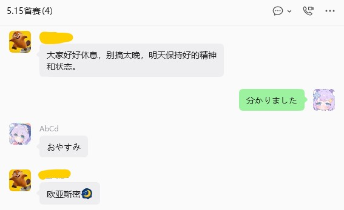
第二天
先给大家展示一下，我参加的第27届湖南省中小学生数字素养提升实践活动，应该是有点含金量的。
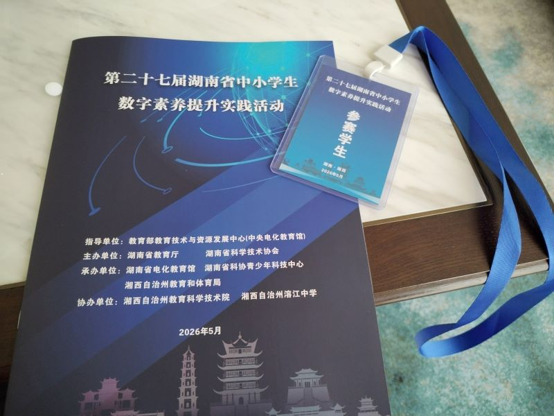
爬上这个登神长阶，我们终于到达教学楼。（我都不敢想快迟到了爬这么长的楼梯有多绝望，谁家好人把学校建在山上啊）
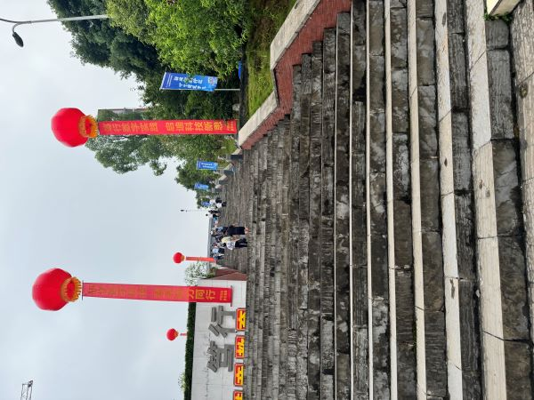
接着就是两个小时的时间，给你一个题目，不限制编程语言和框架，实现对应的功能，而且最重要的是允许AI辅助！
题目我不方便泄露，当时我使用PySide6+QFluentWidget，这个框架我很熟悉，也是我程序中最常见的一种组合，但是两个小时怎么说都不够用，最后五分钟我才开始Pyinstaller打包。
我把电脑上能关掉的程序都关掉，将电源模式拉到最高性能，希望它能尽快完成打包，越快越好。
我的编号是01，所以第一个收的就是我的作品。离结束只剩最后一分钟，dist目录终于全部生成，我将打包产物和screenshot压缩后拷进老师的U盘。
然而，急就会生乱，我竟然忘记上传源代码！
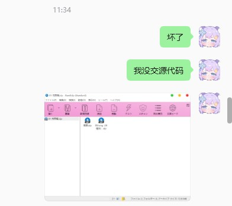
你知道我有多绝望吗？
事已至此，只能先准备下午的答辩。打开Typora就是一顿输出，尽力描述我的程序亮点，以及思考评委可能会问我什么问题。
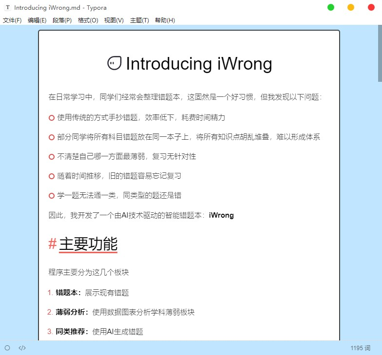
下午，我自信地走进教室，虽然第一个答辩还是有点紧张，但我还是面带微笑，用洪亮的声音讲解作品。
结果，那答辩是真答辩啊
我就不多说了，直接看图
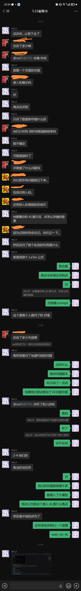
虽然不知道结果如何，但这次经历对我来说是一次难得的锻炼机会，正如我所说的，web>qt>tk，在那种环境开发一定要越快越好。我们那一组基本上都是纯网页，使用qt确实要花大把时间调widget，调layout，美观性和可自定义程度也远没有网页那么灵活，属实是费力不讨好。
不管怎么样我都心满意足了，这其实也是人生路上一次宝贵的体验，而且就算进不了国赛，起码省里有奖（